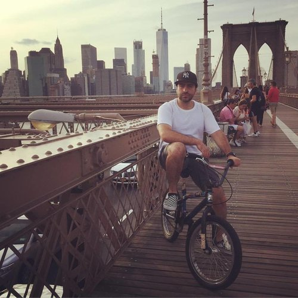

I’m a UX Designer & Web Developer based in Brooklyn, NY. I’m a problem solver who cares about building websites that are both incredibly easy and delightful to use by applying an empathetic and user-centric design approach. From responsive websites , ecommerce, and educational learning platforms, to company branding/identity, advertising, and publications, I've designed and worked on a wide range of projects.
When I'm not working I'm usually checking out an art show or exploring a museum's latest exhibit. As hobbies I'm passionate about painting, taking photos, cooking, and riding my bike. I'd love to hear about your next project!